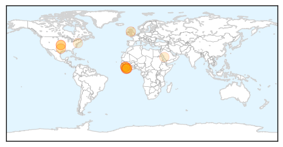
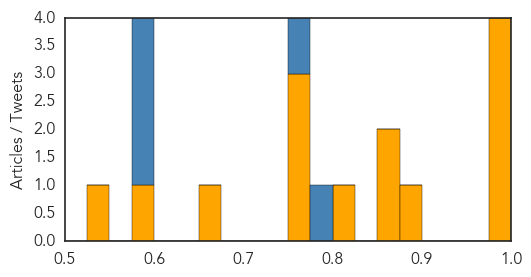
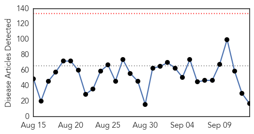
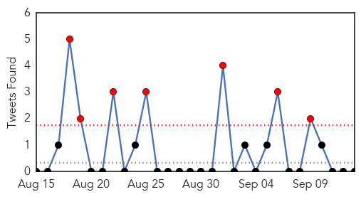
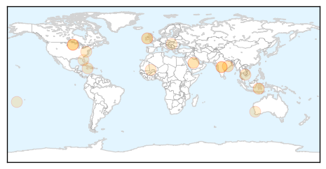
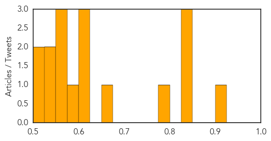

Ebola
30-Day Web Trend
0 alerts, 0 warnings

30-Day Twitter Trend
0 alerts, 0 warnings

Article Locations
Article Confidences
Top Articles:
- 0.999
- Ebola patient in Dallas struggling to survive, says CDC head
- 0.997
- LIBERIA: Another KRTTI Student Falls To Ebola As Liberian Leader Calls For Robust National Response To End The Virus
- 0.995
- Ebola Case Diagnosed in the UK
- 0.975
- IMF says it’s committed to backing Liberia’s recovery from Ebola
- 0.883
- DARPA Is Developing Human Bio-Factories to Brew Lifesaving Vaccines
- 0.868
- ‘A Show of Solidarity’: Ellen Extols IMF Managing Director
- 0.867
- Trials to show if ZMapp, Ebola vaccines work to start soon in West Africa
- 0.813
- Ebola survivor Pauline Cafferkey on her ordeal: 'I left my isolation tent after 21 days. I havent been camping since'
- 0.771
- In aftermath of Ebola, Sierra Leone finds forgiveness is a powerful resource
- 0.764
- 5 Things I Learned In The World's Largest Ebola Outbreak
- 0.757
- President Sirleaf, Joe Boakai Receive Women Liberian Honors
- 0.663
- Sierra Leoneans Take Stock of Quarantine Losses
- 0.580
- On Transparency, Accountability, Open Governance OAP Commends Sierra Leone
- 0.543
- Christie recalls Maine's gift to N.J. last year — the 'Ebola nurse'
Top Tweets:
- 0.944
- In aftermath of Ebola, Sierra Leone finds forgiveness is a powerful resource - Yahoo News http://t.co/iXrhGRhbT8 ebola EVD
- 0.924
- In aftermath of Ebola, Sierra Leone finds forgiveness is a powerful resource - Christian Science Monitor http://t.co/sRhMg8ewGX ebola EVD
- 0.872
- This is How Ebola Resists Treatment with Antibody Cocktails - Gizmodo http://t.co/xPPVkuxU25 ebola EVD
- 0.872
- This is How Ebola Resists Treatment with Antibody Cocktails - Gizmodo http://t.co/haC661vzh9 ebola EVD
- 0.872
- This is How Ebola Resists Treatment with Antibody Cocktails - Gizmodo http://t.co/Vgm7NK3D4D ebola EVD
- 0.806
- Danny Glover to star in movie about Ebola - Channel 24 http://t.co/nPynN82xpA ebola EVD
- 0.601
- 'Waves of Grace' is a Powerful 360 Film of an Ebola Survivor from the UN and VRSE - Road to VR http://t.co/NtuowfWSfv ebola EVD
- 0.590
- According infographic, joint pain & headaches are the top 2 challenges facing Ebola survivors in Sierra Leone http://t.co/BrMRmkj2BS
- 0.549
- Christie recalls Maine's gift to N.J. last year - the 'Ebola nurse' - http://t.co/gJHXqVkJbV http://t.co/qe4UEXgnjv ebola EVD
Unknown
30-Day Web Trend
0 alerts, 0 warnings

30-Day Twitter Trend
6 alerts, 9 warnings

Article Locations
Article Confidences
Top Articles:
- 0.903
- Pattaya News, Communities, Opinions and much more...
- 0.847
- 45 Sickened In Minnesota After Recent Chipotle Restaurants Salmonella Outbreak
- 0.836
- Latest news on sustainable development, features, opinions, interviews with NGO leaders and multimedia from India and South Asia
- 0.828
- Focus on neglected tropical diseases
- 0.785
- HIV/AIDS gaining ground in Odisha; 3500 new cases every year
- 0.651
- Ministry Lays Out Plan to Contain Pig Disease
- 0.617
- To Your Good Health: Was Case of ‘Bird Lung’ an Allergy or Infection?
- 0.615
- VLIEGTUIG NL-VAKANTIEGANGERS NEERGESCHOTEN
- 0.615
- Acute Rheumatic Fever
- 0.586
- Minnesota salmonella outbreak tied to Chipotle locations
- 0.567
- Bat with deadly lyssavirus found at Brisbane's popular West End markets
- 0.557
- Cooks celebrations blamed for rise in pneumonia
- 0.550
- Doctors warn of disease risk at Hungary refugee camp
- 0.533
- Prioritize anti-cancer drive: WHO to India
- 0.530
- Janssen's STELARA® (Ustekinumab) Available in the UK for the... -- HIGH WYCOMBE, England, September 14, 2015 /PR Newswire UK/ --
- 0.523
- Janssen's STELARA® (Ustekinumab) Available in the UK for the Treatment of Adolescents With Moderate-to-Severe Psoriasis
- 0.508
- US hospital ship brings care, hope to poor Haitians
Top Tweets:
- 0.609
- RT: Glorioso el triunfo vinotinto en FIBAAmericas2015 orgullosos de ser Venezolanos!